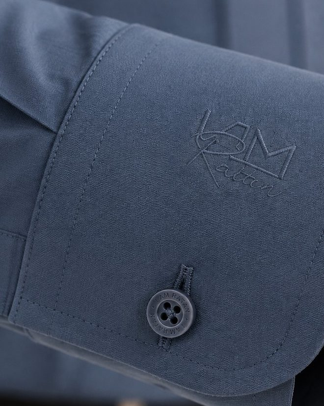

On wearing it
The long way round
A shirt that only works behind a desk is a uniform. This is about the other six days.
The journal
On cloth, on colour, and on the details that only show at arm's length.
Five entries are laid out below with their photography and their headings. The writing is still to come. Send the copy and each one becomes a page of its own.
On wearing it
A shirt that only works behind a desk is a uniform. This is about the other six days.
On colour
Why the darkest cloths in the range are the hardest to weave, and the easiest to wear.

On detail
It fastens a shirt. It also tells you how much of the maker's attention the rest of it got.

On making
Embroidered in the cloth's own colour, where only the wearer and the person shaking his hand will find it.
On the house
The room in India that made luxury the world admired, and never got to sign it.